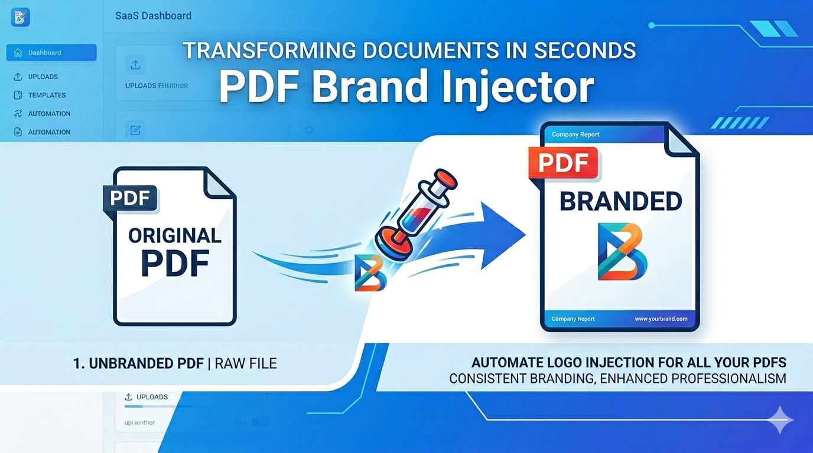

PDF Brand Injector
Automatically inject your company logo into PDF files with smart positioning.
🚀 Features
- Automatically adds logo to uploaded PDF files
- Predefined positions:
- Top Left
- Top Center
- Top Right
- Middle Center
- Bottom Center
- Bottom Right
- Manual X/Y positioning override
- Adjustable logo width & height
- Works with all PDF attachments
- Easy configuration via Odoo Settings
🎯 Use Cases
- Invoice branding
- Company document standardization
- Report customization
- Watermark-style logo placement
⚙️ How It Works
- Go to Settings → Auto Logo PDF
- Select logo position or set custom X/Y
- Upload any PDF file
- The logo is automatically injected
🖼 Preview

💡 Why Choose This Module?
- Lightweight and fast
- No manual editing required
- Works automatically on upload
- Clean and user-friendly interface
🛠 Support
Need customization or help?
Contact us: hello@thesanmark.com